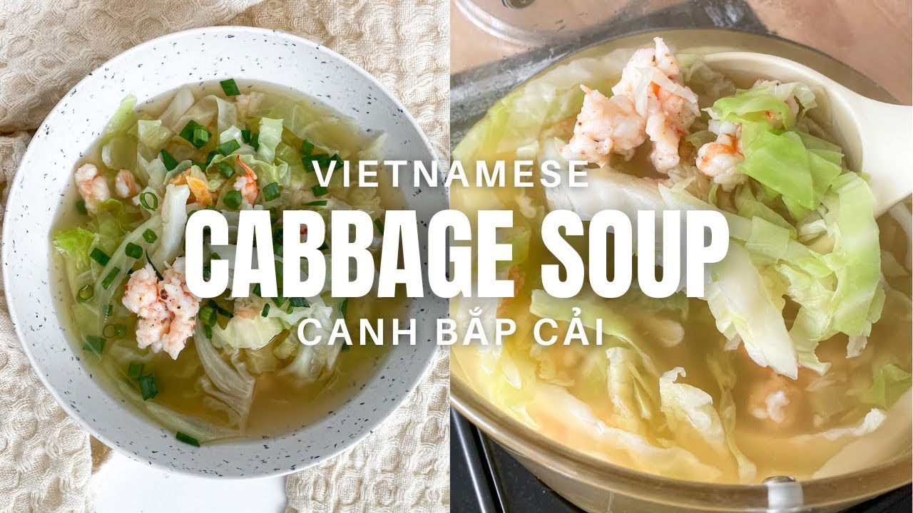

So you want to make a lovely, heart warming bowl of Vietnamese cabbage soup, do you?
Well you came to the right place.

What you'll need...
- 1 head of cabbage
- 1/2 cup of chicken bouillon (chicken soup base)
- 2 lbs of deveined and peeled shrimp
- 3 cups of jasmine white rice
- 1/2 cup of white sugar
- 1 liter of chicken broth
- 2 tbsp of fish sauce
- salt and pepper
What you're gonna do...
- So this is a real simple cabbage soup, meaning that most of the work comes from the prep.
What you want to do is chop the cabbage into some strips. The same way you would see
your lettuce at a McDonalds or Taco Bell.
-
Next, you'll want to chop your shrimp and I mean chop it. Once they're chopped up,
what you want to do is start molding little shrimp balls with your hands.
What youre going for are shrimp balls that are about an inch wide which will give your soup base
a nice little Umami flavor.
-
Pour the chicken broth into a pot and add the same amount of water. A 1:1 ratio of chicken
broth to water. Bring up to a boil and add the fish sauce, sugar, chicken boullion.
Give the broth a nice stir and add the shrimp.
- This is where you'll season to taste with the salt and pepper. The flavor is intended to be a flavorful
and lightly sweet, umami flavor with a lot of body to it.
- Once your soup is to your liking, add all the cabbage. Cabbage cooks rather quick so once it starts boiling again,
take a spoonful of cabbage and feel the texture. It shouldn't be firm in texture, but it should not be soggy either.
Think like the texture of a boiled pasta noodle, you can have it al dente, but sometimes an extra minute won't hurt.
And that's it!
Make sure the shrimp is cooked, soup is nicely seasoned, and cabbage is a nice and soft texture.
You'll have a whole container that can bring you great comfort and perfect for those rainy days.
This is a soup my mother use to make often and she'd often pair it with things like eggs or carmelized tilapia.
The options were endless and was one of the reasons this became my comfort food growing up.
Happy cooking!